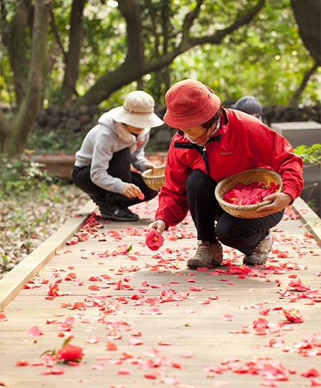
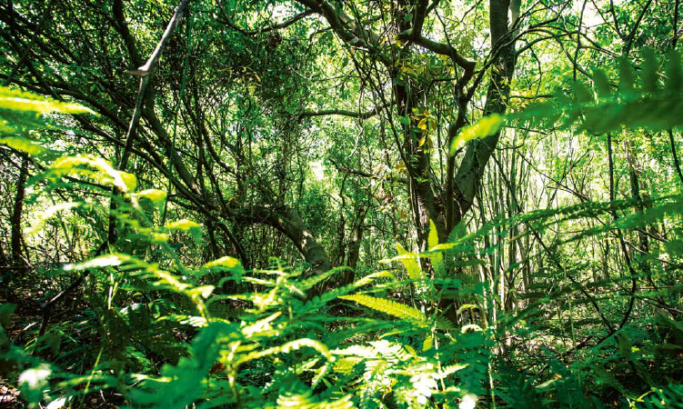

#1 ไร่ชาเขียวแห่งธรรมชาติในเกาะ
เชจู
จุดเริ่มต้นของส่วน
ประกอบที่เชื่อถือได้
3
อินนิสฟรี และ เชจู
อินนิสฟรีมีความพิถีพิถันในการแบ่งปันประโยชน์ของเกาะอันเก่าแก่
เชจู มรดกแห่งอินนิสฟรี
อินนิสฟรี เป็นแบรนด์ธรรมชาตินิยมจากประเทศเกาหลีแบรนด์แรก ซึ่งตามหาความงามอย่างมีสุขภาพดี โดยการแบ่งปันพลังงานธรรมชาติที่สะอาด และบริสุทธิ์
ผลิตภัณฑ์ของอินนิสฟรีทั้งหมดถูกทำขึ้นมาจากส่วนประกอบที่มีคุณภาพสูงจากผืนป่า ดิน และมหาสมุทรในเกาะเชจู นี่เป็นเหตุผลว่าทำไมอินนิสฟรีถึงเป็นที่ไว้วางใจ และเป็นที่รักอย่างยิ่ง
โดยไม่ใช่แค่ในประเทศเกาหลีเท่านั้น แต่ยังมีประเทศอื่นๆในเอเชียที่รักและเชื่อในอินนิสฟรี
อากาศที่สะอาดและสดชื่น แสงอาทิตย์ที่นุ่มนวลและอบอุ่น
ดินที่อุดมสมบูรณ์และเต็มไปด้วยสารอาหาร น้ำที่ไม่มีสารเปื้อนและบริสุทธิ์
เกาะเชจูประกอบด้วยธรรมชาติทั้ง 4 นี้ พลังงานเก่าแก่อีกทั้งยังเต็มไปด้วยความสัตย์ และความงามที่บริสุท์ ที่อินนิสฟรีอยากส่งต่อให้แก่ลูกค้าของเรา ในเกาะเชจูนั้น อินนิสฟรีได้สร้างที่ว่างให้แก่ผิวได้พักผ่อนในธรรมชาติ เพื่อให้ได้
ซึมซาบความพลังงานอันเขียวขจีแห่งเกาะเชจูอันเก่าแก่
อินนิสฟรีและเรื่องเล่าเกี่ยวกับเกาะเชจู
#1 ไร่ชาเขียวแห่งธรรมชาติในเกาะ
เชจู
จุดเริ่มต้นของส่วน
ประกอบที่เชื่อถือได้
ชาเขียวปลอดสารพิษ
ชาเขียวปลอดสารพิษที่แข็งแรงปลูกขึ้นบนดินที่ปลอดสารพิษของไร่ชา ซึง
วัง (Seogwang) ซึ่งตั้งอยู่ในเมืองเชจูมานานถึง 3 ปี
จากราก เมล็ด ใบ จนถึงเมล็ดแห้ง ชาเขียวนี้เต็มไปด้วยสารอาหารและ
พลังงานธรรมชาติ เพื่อส่งต่อพลังและประสิทธิผลของมัน
ไร่ชา ซึงวัง (Seogwang) ได้ถูกควบคุมโดยอินนิสฟรีโดยตรง และชาเขียว
คุณภาพที่เก็บเกี่ยวมาได้นั้นเป็นส่วนประกอบหลักของไลน์ชาเขียวในอินนิสฟรี


การแลกเปลี่ยนที่ยุติธรรมและการซื้อที่ยุติธรรม
ป่าที่ไม่เคยถูกค้นพบมาก่อนเป็นระยะเวลาหลายพันปี และตั้งอยู่ตรงทางผ่านไปยังฐานภูเขาไฟ ที่เรียกว่า ‘คดจาวัล’ ในภาษาถิ่นเชจู ดินของ
ป่าคดจาวัล เกิดจากการที่ต้นไม้ขึ้นมาท่ามกลางหินแห่งภูเขาไฟที่กระจัดกระจายซึ่งอุดมไปด้วยความชุ่มชื้น ป่าแห่งนี้มีอากาศที่อบอุ่น แม้จะ
อยู่ท่ามกลางฤดูหนาว ดังนั้น มีสิ่งมีชีวิตที่หายากเติบโตขึ้นในป่านี้ และนักวิทยาศาสตร์รอบโลก รวมทั้ง IUCN (สหภาพสากลว่าด้วยการ
อนุรักษ์) ก็กำลังศึกษาป่าคดจาวัลด้วยเช่นกัน เพื่อการปกป้องป่าคดจาวัล ที่ซึ่งยังคงความเขียวของใบไม้ตลอดปี อินนิสฟรีได้มีส่วน
เกี่ยวข้องในการช่วยปกป้องธรรมชาติของผืนป่าคดจาวัล
#2 การแลกเปลี่ยนที่ยุติธรรมในเขาคามิเลียและเขาบิชา
เมืองเชจู
การฝึกเรื่องการแบ่งปันที่ดีของอินนิสฟรี

คดจาวัล แห่งเชจู
ป่าที่ไม่เคยถูกค้นพบมาก่อนเป็นระยะเวลาหลายพันปี และตั้งอยู่ตรงทางผ่านไป
ยังฐานภูเขาไฟ ที่เรียกว่า ‘คดจาวัล’ ในภาษาถิ่นเชจู ดินของป่าคดจาวัล เกิดจาก
การที่ต้นไม้ขึ้นมาท่ามกลางหินแห่งภูเขาไฟที่กระจัดกระจายซึ่งอุดมไปด้วยความ
ชุ่มชื้น ป่าแห่งนี้มีอากาศที่อบอุ่น แม้จะอยู่ท่ามกลางฤดูหนาว ดังนั้น มีสิ่งมีชีวิตที่
หายากเติบโตขึ้นในป่านี้ และนักวิทยาศาสตร์รอบโลก รวมทั้ง IUCN (สหภาพ
สากลว่าด้วยการอนุรักษ์) ก็กำลังศึกษาป่าคดจาวัลด้วยเช่นกัน เพื่อการปกป้อง
ป่าคดจาวัล ที่ซึ่งยังคงความเขียวของใบไม้ตลอดปี อินนิสฟรีได้มีส่วนเกี่ยวข้อง
ในการช่วยปกป้องธรรมชาติของผืนป่าคดจาวัล
3. ป่าคดจาวัล ป่าบริสุทธิ์แห่งลับของเมืองเชจู
ผู้ปกป้องสงวนสิ่งมหัศจรรย์แห่งธรรมชาติ
